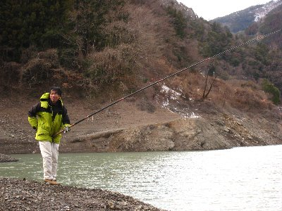
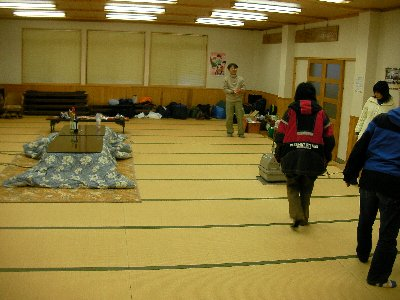
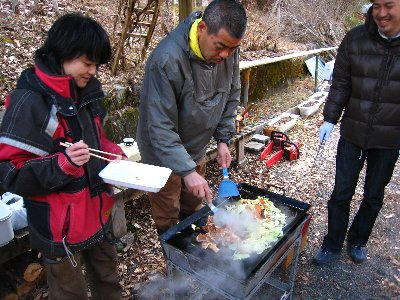

水窪でワカサギ釣り | 2010年2月 幹事：じゅんじゅん＆べっしー |
|---|---|
| 水窪でワカサギが釣れるって知ったのは、11月頃の静岡新聞。こりゃ行かなきゃ！ってことで、水窪特派員のじゅんじゅんにお願いしました。 みんなの都合で2月になっちゃったけど、お泊り企画で水窪へレッツゴー！ 朝10時に水窪集合。ワカサギ釣りは、水窪ではお世話になりっぱなしの板○さんを入れて10名。 ワカサギは水窪ダムで釣れるんだって。雪がチラチラと降る中、誰もいない水窪ダムへ。 | |
 水窪ダム到着 |  ワカサギ釣り開始！ |
| 寒風吹く中、早速仕掛けを投入！ 釣り開始！ じゅんじゅんは既に焚火当番へ。 30分後。いまだアタリすらなし。どうした？ 場所は板○さんがチョイスした一番釣れる場所。 1時間後。アタリは皆無。既にメンバーの半数が焚火当番となり、焚火から離れません。 お昼。とりあえず昼飯だ〜〜 商店「やまみち」で注文しておいたお弁当をほおばる。これ500円にしては具だくさんだな〜。美味しい〜 焚火でお湯を沸かし、カップワンタンも頂きます。寒いときには一層美味いね。 | |
 懸命に竿を振るかむいさん。後ろは焚き火当番 |  焚き火を囲んでお昼 |
| 昼食後しば〜らく脱力していると、アル兄が「つ、釣れた！」 おお〜、確かにワカサギ掛ってる！なぜか尾に針が掛ってるけど・・・ さすが、みんなが焚火でヌクヌクしているときに、一人懸命に竿を振っていましたから、アル兄の根性ですね。 初ワカサギなのでアイドル並みに写真を撮られまくりました。 これでやる気が出たのか、焚火にいた連中も竿を降り始め、じゅんじゅんまでもが初竿振りです。 同じく根性で頑張っていたmaruさんがヒット！ 残念ながらワカサギではなくテンリュウ何とかってハゼの仲間みたいです。 もう一度、アル兄がワカサギを釣って、本日の釣り大会は終了〜 結果、ワカサギ2匹、ハゼ（みたいの）1匹で、優勝はアル兄！次点でmaruさんでした！ 板○さんいわく、水窪のワカサギ釣りシーズンは12月が最高で、2月はちょっと遅いって。・・・・あれ？ | |
 一匹目のワカサギ |  釣りキチ兄 |
| 冷えた体を温めるべく、近くの「しらかば荘」の温泉へ。そして夕食の買い出しをして、本日のお宿へ。 お宿と言っても、本来は泊まれる施設ではなく、いわゆる集会場です。調理場も付いているので調理は可能。布団はないから寝袋持参って施設です。 さて、本日の夕食は。 板○さん差し入れの鹿肉、今回は鹿のハツとレバー付きです！かなりレア商品。そして、えいさん差し入れの猪肉！ 後はアマゴとかのから揚げ（あれ、素揚げだったけ？）忘れちゃいけない、ビールはじゅんじゅんの差し入れです！ ハツを焼いているそばから横からぱくつき、ビールでぐぐっと！ 鹿のハツ、うま〜♪ アマゴ揚げは、ビールに合う合う！ 宴会始まるころには、ほろ酔い気分でしたね。飲みだすと写真を撮らないので、写真ありません。 猪肉は、ビーフシチューの素でシチューに。これって贅沢ですよね。猪シチュー。圧力鍋で作ったので柔らか〜 美味し！ sugar持ち込みのワインも頂き、宴は絶好調！ 8時過ぎに、さるまる夫妻到着。なんとカニを差し入れていただきました。カニも焼いて頂き！すげー美味し！ この後は、じゅんじゅんにワイン一気飲みをやらされ、あまり記憶がありません。たぶん、皆様に多大なるご迷惑をお掛けしたことでしょう。 | |
|  今夜の宴会場 兼 寝床 |  揚げたはしから頂きます |
| 翌日。朝は簡単にって事だったけど、昨日炊いたご飯と、インスタントみそ汁、キャベツとコンビーフの炒め物。朝から美味しいお食事です。 本日はきこり体験。毎年水窪に来てやらせてもらっている、チェーンソーで木を一本切る体験です。 毎回やっても私は飽きません。木を切るって体験なかなか出来ないもんね。 その後、バーベキュー。ドラム缶で焚火をして、鉄板でお肉、野菜焼いて食べました。これ美味いんだ〜 ビール欲しいです。寒いけど。 そんな釣りだか食事ツアーだか不明になったけど、楽しく美味しかったお泊り企画でした。 今回は泊まれる場所を確保出来たので、水窪デビュー出来た人もいらっしゃいました。楽しい水窪をもっとみんなに知ってほしいですね。 | |
 猪シチューもビールとの相性Goodです！ |  昼からバーベキュー。あ〜ビール欲しい。 |
| 写真＆コメント ｂｙ べっしー | |